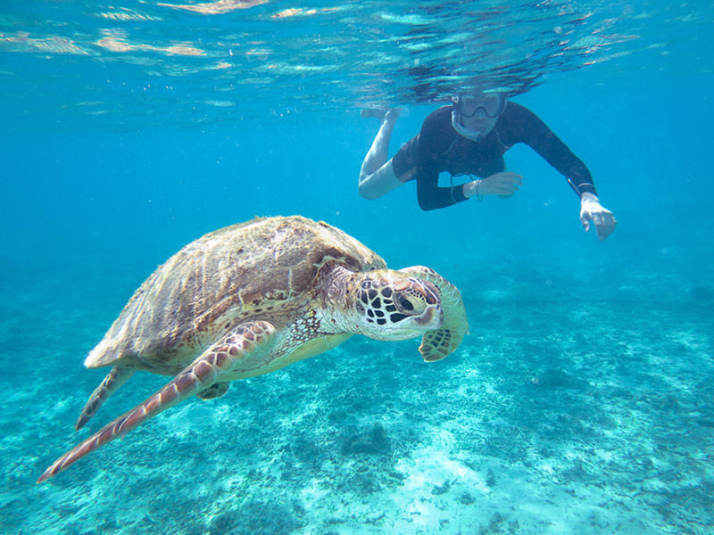

Snorkel en Piura
El snorkel en Los Órganos, Piura, es una experiencia fascinante y accesible para explorar la rica vida marina del norte de Perú. Los Órganos es conocido por sus aguas claras y tranquilas, lo que lo convierte en un lugar ideal para practicar snorkel. Al sumergirte con una máscara y un tubo de respiración, podrás observar una variedad de peces de colores, corales y otros organismos marinos en su hábitat natural.
Las áreas cercanas a las formaciones rocosas y los arrecifes son especialmente ricas en biodiversidad. Además, hay la posibilidad de avistar tortugas marinas, mantarrayas y, en ocasiones, delfines. La temperatura cálida del agua y la visibilidad suelen ser excelentes, lo que permite una experiencia de snorkel cómoda y gratificante.
Muchas empresas locales ofrecen tours guiados de snorkel, proporcionando el equipo necesario y guías experimentados que conocen los mejores lugares para explorar. Esto garantiza una experiencia segura y enriquecedora para los visitantes de todas las edades y niveles de habilidad.

Beneficios del Snorkel
- Mejora tu condición física.
- Reduce el estrés y la ansiedad.
- Permite una conexión más cercana con la naturaleza.
- Es una actividad accesible para todas las edades.
Precio de la actividad
Direccion de la actividad
Horario de Atención
- Lunes - Viernes // 09:00 a.m. - 14:00 p.m.
Opiniones sobre SNORKEL en PIURA
Juan Pérez: "El snorkel me permitió descubrir un mundo completamente nuevo bajo el agua. Fue una experiencia inolvidable!"
María Gómez: "Recomiendo a todos probar el snorkel. Es una actividad divertida y relajante, perfecta para hacer con amigos o en familia."